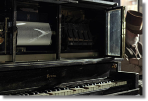

Here's an example. The Intel CPU instruction which copies a value from memory into the CX register is 8B4E06. We humans see this as a hexadecimal (base 16) number. The computer, on the other hand, is a digital electronic device, which doesn't know about numbers at all; it is built using integrated circuits (or transistorized switches), each of which is either on or off. We humans interpret the "on" state as a 1 and the off state as a 0.
So, how does the computer "know" what to do with the instruction 8B4E06? It doesn't! In binary this instruction is 100010110100111000000110, but inside the hardware, it is simply a block of switches. Electricity flows through each 1 to another part of the device. The flow of electricity is blocked by a 0.
As a physical analogy, imagine the player-piano roll, where a hole in the paper causes a note to be played, allowing a hammer to strike a particular string.

Machine code is also called native code, since the computer can use it without any translation. Machine language programs are difficult to understand and, inherently non-portable, since they are designed for a single type of CPU.
Yet, high-performance programs are still written in machine language (or its symbolic form, assembly language ). You can examine the native code for the APPLE II Disk Operating System, written by Steve Wozniak, at the Computer History Museum.